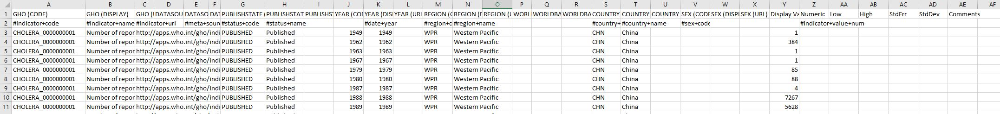

Data was obtained from Data World
An outline of the steps taken to analyse the data are shown here
Obtaining Data
The data was obtained from Data World as .csv file. All the work was carried out using MS Excel and VBA within Excel.
First Examination
The inital examination of the data revealed that the file contained health indicators across a number of years, from 1949 to 2017. The indicators ranged from the number of cholera cases in individual years to "Out-of-pocket expenditure as a percentage of private expenditure on health". Each indicator had a unique ID code. All the indicators were all on a single worksheet and were difficult to read, therefore, it was determined it would be ideal to have a seperate worksheet for each indicator. All work was carried out on a copy of raw data. The Excel function "remove duplicates" was used to see how many unique indictors were present.
The headings are shown below along with the first few entries.

Sorting Data
A VBA script was written to cycle through all the indicator IDs and create seperate worksheets for each indicator. The indicators ID were used since they were all unique and all fewer than 12 characters, reducing the memory required. After the sort it was found that some indicators only had one entry. A seperate script was written to combine all these indicators into a single worksheet to save memory.

Graphical represention of data
The graphing functions within Excel were used to plot the change in the indicators across the years. The indicators with a single entry were combined and plotted on a seperate graph.
Analysis
These health indicators show that China has developed significantly over the last 50 years and these developments have resulted in a greater quality of live for its citizens. They also show a significant decrease in the number of deaths from preventable causes. Nevertheless, they do not show the number of cases of conditions attributed to more “western” lifestyle, such as COPD, type two diabetes, or obesity related problems.